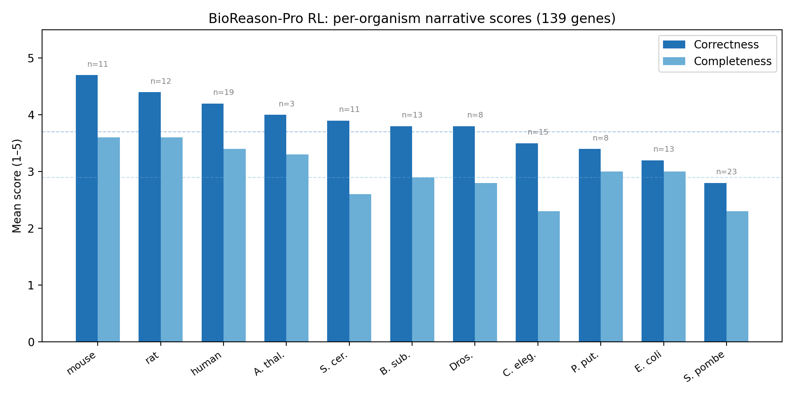
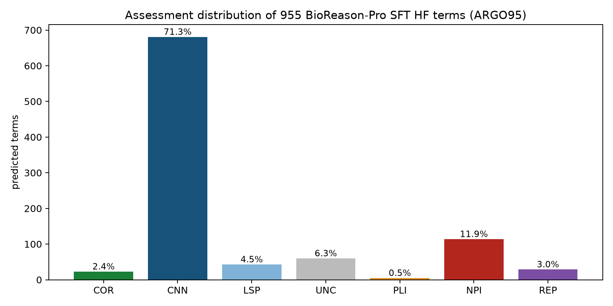

Agentic evaluation of function prediction tools yields qualitative insights into systematic errors
When is a new function-prediction method good enough to deploy?
A complement to CAFA built on AI Gene Review (AIGR)
ISMB 2026 · Function-COSI · github.com/ai4curation/ai-gene-review
The deployment question
New function-prediction methods appear monthly — protein language models, generative models, agentic reasoning LLMs.
Annotation databases (GO, UniProt) face a concrete, recurring decision:
Should we import this method's predictions into production?
Classical pipelines (InterPro2GO, PANTHER/PAINT, orthology transfer) are traceable: every annotation traces to a curated family → GO mapping.
The new methods are opaque, prolific, and emit free text — not just GO terms.
CAFA is indispensable — but insufficient for deployment
CAFA ($F_{\max}$, $S_{\min}$ vs GOA temporal holdout) tracks field-level progress. Three structural gaps for a deployment decision:
- Metric-level — $F_{\max}$ rewards generic, high-frequency terms; lenient toward false positives; rankings flip with protein- vs term-centric scoring.
- Ground-truth — GOA is not truth: over-annotations, paralog-inherited errors, <1% negative annotations; 58% of human annotations cover 16% of genes.
- Holdout-set — benchmark composition is set by curation-campaign funding, not the biology you need to annotate.
And the big one: aggregate metrics operate on the bag-of-GO-terms projection — they leave narrative and reasoning unscored.
The precedent: de Crécy-Lagard et al. 2025 (G3)
Manually reviewed all 453 DeepECTransformer EC predictions for uncharacterised E. coli proteins.
Only 3 / 453 were genuinely novel and correct.
The lasting contribution is the error taxonomy — the structure a curator needs after the aggregate score:
| COR correct novel | CNN correct but not novel |
| LSP less precise | PLI paralog-incorrect |
| NPI non-paralog-incorrect | REP frequency-biased |
| UNC uncertain |
Every rejection required synthesis — domain architecture, paralog subfamily, pathway presence, in-vitro vs in-vivo, primary literature.
The synthesis bottleneck
Each de Crécy-Lagard verdict needed a human expert to integrate many lines of evidence.
That does not scale when methods ship monthly and prediction sets run to the thousands.
Our question
Can the synthesis step itself be partially automated?
→ AI Gene Review (AIGR): LLM curator-agents grounded in a per-gene evidence package, producing structured, traceable synthetic reviews.
AIGR is a complement to, not a replacement for, CAFA.
The AIGR pipeline
1 · Evidence assembly (per gene, cached & reproducible)
UniProt record · full GO annotation table (QuickGO) · InterPro architecture · cached full-text publications · orthogonal deep-research report
2 · Curator-agent review (three phases)
- Annotation-level: each GO term → ACCEPT / KEEP_AS_NON_CORE / MODIFY / REMOVE / MARK_AS_OVER_ANNOTATED / UNDECIDED + verbatim supporting quote
- Core-function synthesis: free-text summary + proposed terms
- Prediction review: classify each predicted term with the Expert Synthetic Review taxonomy + error-type tags
3 · Validation — LinkML schema + best-practice checks; every quote must literally appear in a cached publication
Open source · Typer CLI · just targets · browsable at ai4curation.io/ai-gene-review
The system under test: BioReason-Pro
A two-stage agentic predictor (Fallahpour et al. 2026):
| Stage | What it is | Output |
|---|---|---|
| GO-GPT | Autoregressive transformer (ESM2 + organism) | GO term hierarchy (upstream input) |
| BioReason-Pro | Qwen3-4B fine-tune | <think> trace + free-text functional summary |
- SFT variant — more mechanistic depth, more hallucination
- RL variant — safer, shallower (never fabricates InterPro)
Key: BioReason-Pro does not emit its own GO terms — the web app's GO panels are GO-GPT's. It is fundamentally a narrative model.
Case study 1 — ARGO139 design
- 139 proteins, 14 species labels
- Spanning model-organism genes and non-MOD / less-specialized contexts: pseudoenzymes, sigma-factor paralogs, organism-specific regulators, moonlighting proteins, venom enzymes
- For each gene: BioReason-Pro RL summary + trace, SFT GO terms where available, AIGR curated review as ground truth
- A dedicated comparison agent scores two axes (1–5), each with required supporting quotes:
- Correctness — are the claims accurate?
- Completeness — do they span the gene's core biology?
- Plus a per-gene InterPro2GO baseline comparison: novel insight, or restatement?
Overall scores: safe, but shallow
Correctness 3.7 / 5 · Completeness 2.9 / 5
| Score | Correctness | Completeness |
|---|---|---|
| 5 | 38 (27%) | 1 (1%) |
| 4 | 48 (35%) | 40 (29%) |
| 3 | 32 (23%) | 51 (37%) |
| 2 | 15 (11%) | 40 (29%) |
| 1 | 6 (4%) | 7 (5%) |
27% score 5/5 on correctness, but only one gene (Uggt1) reaches 5/5 completeness.
The failure tail is small but structurally distinctive — not random noise.
Performance tracks InterPro informativeness

Best on mammals (mouse 4.7, rat 4.4, human 4.2); worst on S. pombe (2.8) — gradient follows how diagnostic the InterPro family names are, and training-set representation.
Seven reproducible failure modes
Immediately diagnostic to a reader of the narrative.
| # | Failure mode | Example |
|---|---|---|
| 1 | Pseudoenzyme blind spot | Epe1 — "JmjC demethylase" despite degenerate active site |
| 2 | Localisation defaults to cytoplasm | CpxP periplasmic → called cytoplasmic |
| 3 | Paralog indistinguishability | Fyn ≡ Src; sigF ≡ sigG ≡ sigK |
| 4 | Organism-specific biology absent | daf-16 generic FoxO, no IIS/dauer/longevity |
| 5 | Neo-functionalisation / moonlighting missed | Nmnat NAD⁺ enzyme; chaperone role lost |
| 6 | Narrative–GO disconnect | RidA: protein binding not deaminase activity |
| 7 | Cross-kingdom fold bias | aprE subtilisin → "human blood coagulation" |
The biases are architectural — they predict where the model will fail on deployment.
What the narratives actually look like
RAS2 (yeast, 2/5) — "a Ras-family GTPase … regulating intracellular vesicle traffic converging on the vacuole"
✗ Actually the primary activator of the cAMP/PKA pathway.Epe1 (S. pombe, 2/5) — "a nuclear histone demethylase … JmjC oxygenase core"
✗ A pseudoenzyme (HVD not HXD); anti-silencing factor via HP1/Swi6.TOR1 (yeast, 5/5) — "PIKK serine/threonine kinase … HEAT repeats scaffold regulatory assemblies … integrates nutrient & stress cues"
✓ Correct — the FRB + multi-domain architecture enabled pathway-level inference.
Mostly a narrative restatement of InterPro2GO
The dominant mode across 139 genes: translate InterPro domains into prose, no new biology. Where InterPro2GO errs, BioReason-Pro recapitulates and amplifies.
Adds genuine value only when multi-domain architecture is diagnostic:
TOR1 · NOTCH1 · PTEN · EGFR · spo0A · (informative family names: Uggt1, KAR2, bst1)
A method that restates InterPro2GO at 3.7/5 correctness provides no net annotation value on top of the existing pipeline — even with a competitive headline $F_{\max}$.
Supplemental review: GOA agreement ≠ biological validity
GO-GPT run directly on 300 genes; overlap measured against three progressively stricter references:

The 5-fold gap between raw-GOA agreement (11.7%) and curator core-function agreement (2.4%) is the difference between "scores well on CAFA" and "predicts the gene's real biology."
ARGO139 SFT terms: two-thirds is old news
955 SFT HF-catalogue terms (95 ARGO139 genes), every COR/NPI verified against primary literature:

67.5% CNN (already in GOA) · 10.6% NPI (wrong) · 5.4% COR (novel & correct) · 3.9% LSP · 2.2% REP
The 5.4% COR are gaps any knowledgeable curator would also fill. Across ARGO139: not one function unknown to the literature.
The two arms fail independently
BioReason-Pro's narrative and its GO-term list are generated semi-independently — and can disagree:
- RAS2 — GO terms correctly predict adenylate cyclase activation (GO:0007190); narrative wrongly describes vesicle trafficking.
- CpxP — GO terms correctly place it in the periplasm (GO:0030288); narrative wrongly says cytoplasm.
Neither the narrative nor the term list can be trusted in isolation — a deployment protocol must evaluate both. CAFA metrics see only the term list.
(SFT-specific risk: 16% of SFT outputs fabricate fake "UniProt Summary" text for uncharacterised proteins.)
Case study 2 — ESR-ECOLI-DET-Mini
7 E. coli genes spanning all classes; AIGR reproduces the published taxonomy.
Not blinded: the project artifacts include the published expert labels/rationales.
Dataset ID: 10.5281/zenodo.20751016
| Gene | Paper | AIGR | Recovered rationale |
|---|---|---|---|
| ygfF | COR | COR | SDR family; GDH activity confirmed |
| yciO | PLI | PLI | TsaC paralog; ~10⁴× weaker activity |
| yegV | PLI | PLI | Correct sugar-kinase EC prefix; substrate unknown |
| yjhQ | NPI | NPI | Mycothiol pathway absent from E. coli |
| yrhB | NPI | NPI | QueD already encodes activity; Imm35 domain |
| yjdM | UNC | UNC | In-vitro activity, no in-vivo phenotype |
| fepE | REP | REP | No HK similarity; Wzz O-antigen regulator |
7 / 7 classifications + mechanistic rationales reproduced. This is a positive control for the schema/workflow, not a blinded accuracy estimate.
Answer-key withheld recap: useful, not expert-equivalent
A separate literature/bioinformatics-assisted run excluded the de Crécy-Lagard paper and published rationales.
| Gene | Expert | Withheld run | Interpretation |
|---|---|---|---|
| fepE | REP | REP | Frequency-bias smell test recovered |
| yciO | PLI | PLI | Paralog-overannotation recovered |
| yjhQ / yrhB | NPI | NPI | Pathway-context failures recovered |
| yegV / ygfF | PLI / COR | UNC | Conservative misses |
| yjdM | UNC | NPI | Too harsh on in-vitro vs in-vivo boundary |
4 / 7 exact labels. Good enough to triage suspicious sequence-AI predictions; not a substitute for expert boundary judgments.
A three-tier framework for evaluation
| Tier | What | Scales? | Grades narrative? |
|---|---|---|---|
| 1 · Aggregate (CAFA $F_{\max}$/$S_{\min}$) | GOA temporal holdout | ✓ 10⁴ proteins | ✗ |
| 2 · Expert / agentic review (AIGR) | Per-gene synthesis + taxonomy | partially automated | ✓ |
| 3 · Prospective experiment | Assays, genetics, microscopy | ✗ no protocol | n/a |
- Tier 1 can't tell "adds new biology" from "restates InterPro2GO."
- Tier 3 doesn't scale — "function" is multi-dimensional & organism-specific.
- Tier 2 is the practical level for deployment decisions — AIGR brings its cost toward Tier 1.
Recommendation: report a Tier-1 score and a Tier-2 agentic biological-validity score.
Conclusions
BioReason-Pro mostly tells you what you already know, occasionally something correct GOA hasn't recorded, and ~1 in 9 times something wrong — in predictable, diagnosable ways.
- Narratives restate InterPro2GO (3.7 / 2.9); seven architectural failure modes
- GO terms: 67.5% not-novel, 10.6% wrong, 5.4% novel-correct in the cleaner ARGO139 HF subset; 0 functions unknown to literature
- Narrative and term arms fail independently → not ready for unsupervised import
The most valuable thing a foundation model can produce is a well-reasoned narrative — it can be reviewed, corrected, combined. Naked GO terms cannot.
Agentic Tier-2 review reads narratives, surfaces systematic failures, separates novelty from restatement — and is already useful as a triage/smell-test layer, even though expert-level nuance remains human.
Thank you
Data, reviews, pipeline, schema & validator — all open:
github.com/ai4curation/ai-gene-review
Browse 139 BioReason-Pro reviews + ESR-ECOLI-DET-Mini:
ai4curation.io/ai-gene-review
de Crécy-Lagard et al. 2025 (G3, PMID:40703034) · Fallahpour et al. 2026 (bioRxiv 10.64898/2026.03.19.712954)